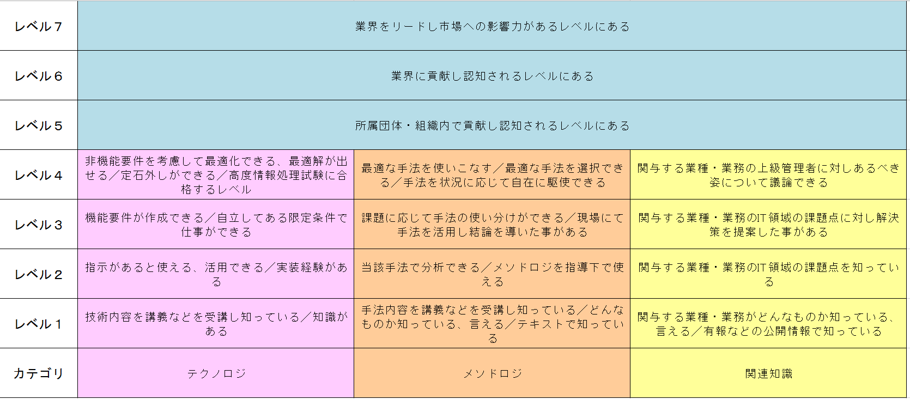

Expand
-
Collapse
Bib04-05スキル概要と情報処理試験（熟達度レベル評価判定）
スキル熟達度

ITパスポート試験 レベル1
技術内容を講義などを受講し知っている／知識がある
手法内容を講義などを受講し知っている／どんなものか知っている、言える／テキストで知っている
関与する業種・業務がどんなものか知っている、言える／有報などの公開情報で知っている
基本情報技術者試験 レベル2
指示があると使える、活用できる／実装経験がある
当該手法で分析できる／メソドロジを指導下で使える
関与する業種・業務のIT領域の課題点を知っている
応用情報技術者試験 レベル3
機能要件が作成できる／自立してある限定条件で仕事ができる
課題に応じて手法の使い分けができる／現場にて手法を活用し結論を導いた事がある
関与する業種・業務のIT領域の課題点に対し解決策を提案した事がある
戦略
（戦略） 市場機会の評価と選定
経営戦略マネジメント
（戦略） マーケティング
経営戦略マネジメント
（戦略） 製品・サービス戦略
サービスマネジメント
経営戦略マネジメント
（戦略） 製品・サービス開発戦略
技術戦略マネジメント
（戦略） システム戦略立案手法
システム戦略
（戦略） コンサルティング手法
企業活動
（戦略） 業務動向把握手法
システム監査
システム企画
ビジネスインダストリ
企画
（企画） システム企画立案手法
システム企画
（企画） 要求分析手法
システム企画
（企画） 非機能要件設計手法
システム企画
システム開発技術
実装
（実装） アーキテクチャ設計手法
システム構成要素
システム開発技術
システム戦略
（実装） ソフトウェアエンジニアリング手法
システム開発技術
ソフトウェア開発管理技術
（実装） カスタマーサービス手法
システム開発技術
（実装） 業務パッケージ活用手法
システム企画
ビジネスインダストリ
（実装） データマイニング手法
基礎理論
データベース
（実装） 見積り手法
プロジェクトマネジメント
（実装） プロジェクトマネジメント手法
プロジェクトマネジメント
利活用
（利活用） サービスマネジメント
サービスマネジメント
（利活用） サービスの設計・移行
サービスマネジメント
（利活用） サービスマネジメントプロセス
サービスマネジメント
（利活用） サービスの運用
サービスマネジメント
支援活動
（支援活動） 品質マネジメント手法
システム開発技術
プロジェクトマネジメント
企業活動
（支援活動） リスクマネジメント手法
セキュリティ
プロジェクトマネジメント
企業活動
（支援活動） ITガバナンス
システム監査
（支援活動） 資産管理手法
ソフトウェア開発管理技術
企業活動
（支援活動） ファシリティマネジメント手法
サービスマネジメント
（支援活動） 事業継続計画
サービスマネジメント
企業活動
（支援活動） システム監査手法
システム監査
（支援活動） 標準化・再利用手法
ソフトウェア開発管理技術
法務
（支援活動） 人材育成・教育・研修
（支援活動） 情報セキュリティ
情報セキュリティ監査契約手法
システム
ソフトウェア
（システム） ソフトウェアの基礎技術
アルゴリズムとプログラミング
ソフトウェア
（システム） ソフトウェアの構築技術
システム開発技術
ソフトウェア
（システム） ソフトウェアの利用技術
基礎理論
ソフトウェア開発管理技術
ビジネスインダストリ
Webシステム
（システム） Webシステムの基礎技術
システム構成要素
ネットワーク
セキュリティ
（システム） Webシステムの構築技術
アルゴリズムとプログラミング
（システム） Webシステムの構築技術
ソフトウェア
（システム） Webシステムの利用技術
ビジネスインダストリ
データベース
（システム） データベースの基礎技術
データベース
（システム） データベースの構築技術
データベース
（システム） データベースの利用技術
データベース
プラットフォーム
（システム） プラットフォームの基礎技術
ソフトウェア
（システム） プラットフォームの構築技術
ソフトウェア
（システム） プラットフォームの利用技術
システム構成要素
ソフトウェア
ハードウェア
（システム） ハードウェアの基礎技術
ハードウェア
（システム） ハードウェアの構築技術
コンピュータ構成要素
ハードウェア
（システム） ハードウェアの利用技術
コンピュータ構成要素
ソフトウェア
ハードウェア
ネットワーク
（システム） ネットワークの基礎技術
ネットワーク
（システム） ネットワークの構築技術
ネットワーク
（システム） ネットワークの利用技術
ネットワーク
開発
（開発） システムアーキテクティング技術
システム開発技術
ソフトウェア
（開発） システム開発管理技術
ソフトウェア開発管理技術
保守・運用
（保守・運用） ITサービスマネジメント業務管理技術
サービスマネジメント
（保守・運用） ITサービスオペレーション技術
サービスマネジメント
（保守・運用） システム保守・運用・評価
システム開発技術
（保守・運用） 障害修理技術
（保守・運用） 施工実務技術
（保守・運用） ファシリティ設計技術
（保守・運用） サポートセンター基盤技術
非機能要件
（非機能要件） 非機能要件（可用性、性能・拡張性）
システム構成要素
（非機能要件） セキュリティの基礎技術
セキュリティ
（非機能要件） セキュリティの構築技術
セキュリティ
（非機能要件） セキュリティの利用技術
セキュリティ
共通技術
（共通技術） IT基礎
基礎理論
アルゴリズムとプログラミング
コンピュータ構成要素
システム構成要素
（共通技術） ナレッジマネジメント技術
ビジネスインダストリ
ビジネスインダストリ
企業活動
企業活動
法務
法規・基準・標準
法務
主トピック 15